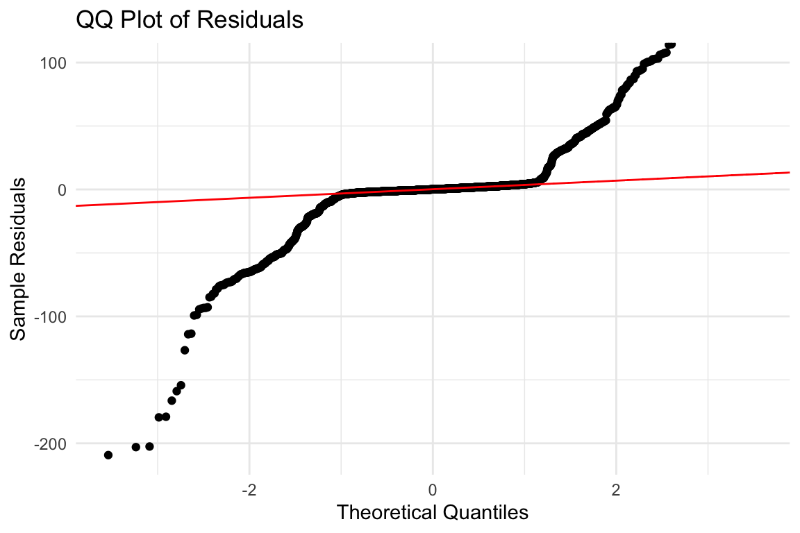

library(dplyr)
Attaching package: 'dplyr'The following objects are masked from 'package:stats':
filter, lagThe following objects are masked from 'package:base':
intersect, setdiff, setequal, unionlibrary(ggplot2)
library(tidyr)library(dplyr)
Attaching package: 'dplyr'The following objects are masked from 'package:stats':
filter, lagThe following objects are masked from 'package:base':
intersect, setdiff, setequal, unionlibrary(ggplot2)
library(tidyr)Move amb 4 from south to north - Sonya -when we move from south to north
load("emsData.RData")#don't remove central, fix this.
#we are assuming that we are only looking at causes in south and north then
#this is why i removed central because this option means that is separate
x |>
select(eTT.BG.So, eTT.BG.NN, eTT.BG.FN, REF.GRID) |>
filter(REF.GRID != "2 Central") |>
select(-REF.GRID) |>
pivot_longer(cols = everything(),
names_to = "source",
values_to = "value") |>
ggplot(aes(x = source, y = value)) +
geom_boxplot() +
labs(
x = "Source",
y = "eTT.BG Value",
title = "Distribution of eTT.BG by Source"
) +
theme_minimal()we lose something though. if we have something there, we lose something. We somehow end up putting it below hand.
library(lubridate)
Attaching package: 'lubridate'The following objects are masked from 'package:base':
date, intersect, setdiff, unionx<- x %>%
mutate(
disp_hour = hour(DT.DISP),
disp_min = minute(DT.DISP),
rush_hour = !is.na(DT.DISP) & (
#morning 7:30pm - 9:30am
(disp_hour == 7 & disp_min >= 30) |
(disp_hour == 8) |
(disp_hour == 9 & disp_min < 30) |
#evening 4:00pm - 6:30pm
(disp_hour == 16) |
(disp_hour == 17) |
(disp_hour == 18 & disp_min < 30)
),
# 1 if rush hour 0 else
rush_hour_ind = as.integer(rush_hour)
) %>%
select(-disp_hour, -disp_min)time = cbind(x$eTT.BG.NN, x$eTT.BG.FN, x$eTT.BG.So)
x %>%
select(eTT.BG.NN, eTT.BG.FN, eTT.BG.So) %>%
pivot_longer(cols = everything(),
names_to = "source",
values_to = "time") %>%
ggplot(aes(x = time, color = source)) +
geom_density(linewidth = 1.2) +
labs(
x = "Time",
y = "Density",
title = "Distribution of eTT.BG Values (All Sources)"
) +
theme_minimal()
x %>%
filter(REF.GRID != "2 CENTRAL") %>%
select(eTT.BG.NN, eTT.BG.FN, eTT.BG.So) %>%
pivot_longer(cols = everything(),
names_to = "source",
values_to = "time") %>%
ggplot(aes(x = time, color = source)) +
geom_density(linewidth = 1.2) +
labs(
x = "Time",
y = "Density",
title = "Distribution of eTT.BG Values (All Sources)"
) +
theme_minimal()x %>%
filter(REF.GRID != "2 Central") %>%
mutate(REF.GRID = as.factor(REF.GRID)) %>%
pivot_longer(
cols = c(eTT.BG.NN, eTT.BG.FN, eTT.BG.So), # pivot only numeric time columns
names_to = "source",
values_to = "time"
) %>%
ggplot(aes(x = time, color = source)) +
geom_density(linewidth = 1.2) +
labs(
x = "Time",
y = "Density",
title = "Distribution of eTT.BG Values (All Sources)"
) +
theme_minimal() +
facet_wrap(~REF.GRID)Quantify this, make it into words
library(dplyr)
library(tidyr)
x_long <- x %>%
pivot_longer(
cols = c(starts_with("Dist."), starts_with("eTT.")),
names_to = c(".value", "Destination"),
names_pattern = "(.*)\\.(So|Ce|NN|FN)$"
)library(dplyr)
library(tidyr)
library(stringr)
x_expanded <- x %>%
# create a unique ID per original row
mutate(CallID = row_number()) %>%
# repeat rows for 5 scenarios
tidyr::uncount(weights = 5, .id = "scenario_id") %>%
mutate(
Scenario = paste0("S", scenario_id - 1),
# extract call location from REF.GRID
CallLoc = str_extract(REF.GRID, "(South|Central|North)"),
# normalize to codes
CallLocCode = case_when(
CallLoc == "South" ~ "So",
CallLoc == "Central" ~ "Ce",
CallLoc == "North" ~ "NN" # treat all "North" as "NN"
),
# dispatch rules
Dispatch = case_when(
# S0
Scenario == "S0" & CallLocCode == "NN" ~ "Ce",
Scenario == "S0" & CallLocCode == "Ce" ~ "Ce",
Scenario == "S0" & CallLocCode == "So" ~ "So",
# S1
Scenario == "S1" & CallLocCode == "NN" ~ "NN",
Scenario == "S1" & CallLocCode == "Ce" ~ "Ce",
Scenario == "S1" & CallLocCode == "So" ~ "Ce",
# S2
Scenario == "S2" & CallLocCode == "NN" ~ "FN",
Scenario == "S2" & CallLocCode == "Ce" ~ "Ce",
Scenario == "S2" & CallLocCode == "So" ~ "Ce",
# S3
Scenario == "S3" & CallLocCode == "NN" ~ "NN",
Scenario == "S3" & CallLocCode == "Ce" ~ "Ce",
Scenario == "S3" & CallLocCode == "So" ~ "So",
# S4
Scenario == "S4" & CallLocCode == "NN" ~ "FN",
Scenario == "S4" & CallLocCode == "Ce" ~ "Ce",
Scenario == "S4" & CallLocCode == "So" ~ "So"
),
# pick the correct estimated travel time
EstTravelTime = case_when(
Dispatch == "So" ~ eTT.BG.So,
Dispatch == "Ce" ~ eTT.BG.Ce,
Dispatch == "NN" ~ eTT.BG.NN,
Dispatch == "FN" ~ eTT.BG.FN
)
) %>%
select(-scenario_id)library(lme4)Loading required package: Matrix
Attaching package: 'Matrix'The following objects are masked from 'package:tidyr':
expand, pack, unpacklibrary(broom.mixed)
library(ggplot2)
library(dplyr)
# Store formula as a string for annotation
formula_latex <- "EstTravelTime ~ Scenario + (1 | CallID)"
# Fit the model
m <- lmer(EstTravelTime ~ Scenario + (1 | CallID), data = x_expanded)
# Extract fixed effects, exclude intercept
coefs <- broom.mixed::tidy(m, effects = "fixed", conf.int = TRUE) %>%
filter(term != "(Intercept)") %>%
mutate(Significant = !(conf.low <= 0 & conf.high >= 0))
# Plot
ggplot(coefs, aes(x = term, y = estimate, color = Significant)) +
geom_point(size = 3) +
geom_errorbar(aes(ymin = conf.low, ymax = conf.high), width = 0.2) +
scale_color_manual(values = c("grey60", "steelblue")) +
coord_flip() +
labs(x = "", y = "Coefficient estimate",
title = "Fixed effects (significant ones highlighted)") +
theme_minimal()
# Add the formula as text on the plot (top right)# Extract fitted values and residuals
x_expanded$fitted <- fitted(m)
x_expanded$resid <- resid(m)
# 1. Residuals vs fitted values
ggplot(x_expanded, aes(x = fitted, y = resid)) +
geom_point(alpha = 0.5) +
geom_hline(yintercept = 0, color = "red", linetype = "dashed") +
labs(x = "Fitted Values", y = "Residuals",
title = "Residuals vs Fitted Values")
# 2. Residuals across the categorical variable
ggplot(x_expanded, aes(x = DISPATCH.PRIORITY.NAME, y = resid)) +
geom_boxplot() +
geom_hline(yintercept = 0, color = "red", linetype = "dashed") +
labs(x = "Dispatch Priority", y = "Residuals",
title = "Residuals by Dispatch Priority")
library(nlme)
Attaching package: 'nlme'The following object is masked from 'package:lme4':
lmListThe following object is masked from 'package:dplyr':
collapsex_clean <- x_expanded %>%
filter(!is.na(EstTravelTime),
!is.na(Scenario),
!is.na(REC.LON),
!is.na(REC.LAT))
# Simple lme with residual variance as function of lon/lat
m2 <- lme(EstTravelTime ~ Scenario,
random = ~1 | CallID,
weights = varFixed(~ REC.LON + REC.LAT),
data = x_clean,
method = "REML")
#varident potentially. Var power and var constant power, deepdne on fitted valeusm2Linear mixed-effects model fit by REML
Data: x_clean
Log-restricted-likelihood: -10819.24
Fixed: EstTravelTime ~ Scenario
(Intercept) ScenarioS1 ScenarioS2 ScenarioS3 ScenarioS4
405.607347 20.836469 46.732317 -16.861313 9.034535
Random effects:
Formula: ~1 | CallID
(Intercept) Residual
StdDev: 213.0481 18.07229
Variance function:
Structure: fixed weights
Formula: ~REC.LON + REC.LAT
Number of Observations: 1675
Number of Groups: 335 resid_m <- residuals(m2, type = "pearson")
# Residuals vs predicted
plot(fitted(m2), resid_m, main="Residuals vs Fitted")
abline(h=0, col="red")# Residuals vs coordinates
plot(x_clean$REC.LON, resid_m, main="Residuals vs Longitude")plot(x_clean$REC.LAT, resid_m, main="Residuals vs Latitude")# Histogram
hist(resid_m, breaks=30, main="Histogram of normalized residuals")library(lme4)
# Suppose your spatial variable is called `SpatialID` (already discrete)
# Original model:
# m <- lmer(EstTravelTime ~ Scenario + (1 | CallID), data = x_clean)
# Add spatial random effect:
m_spatial <- lmer(EstTravelTime ~ Scenario + (1 | CallID) + (1 | REC.LON) +(1|REC.LAT),
data = x_clean)boundary (singular) fit: see help('isSingular')# Examine results
summary(m_spatial)Linear mixed model fit by REML ['lmerMod']
Formula: EstTravelTime ~ Scenario + (1 | CallID) + (1 | REC.LON) + (1 |
REC.LAT)
Data: x_clean
REML criterion at convergence: 21638.3
Scaled residuals:
Min 1Q Median 3Q Max
-4.2800 -0.2987 -0.0237 0.1693 5.4289
Random effects:
Groups Name Variance Std.Dev.
CallID (Intercept) 4.539e+04 2.130e+02
REC.LON (Intercept) 1.445e-05 3.802e-03
REC.LAT (Intercept) 2.652e-03 5.149e-02
Residual 1.376e+04 1.173e+02
Number of obs: 1675, groups: CallID, 335; REC.LON, 3; REC.LAT, 3
Fixed effects:
Estimate Std. Error t value
(Intercept) 405.612 13.288 30.525
ScenarioS1 20.830 9.063 2.298
ScenarioS2 46.722 9.063 5.155
ScenarioS3 -16.863 9.063 -1.861
ScenarioS4 9.030 9.063 0.996
Correlation of Fixed Effects:
(Intr) ScnrS1 ScnrS2 ScnrS3
ScenarioS1 -0.341
ScenarioS2 -0.341 0.500
ScenarioS3 -0.341 0.500 0.500
ScenarioS4 -0.341 0.500 0.500 0.500
optimizer (nloptwrap) convergence code: 0 (OK)
boundary (singular) fit: see help('isSingular')resid_m <- residuals(m_spatial)
plot(fitted(m_spatial), resid_m)hist(resid_m, breaks=30)# Combine LON and LAT into a single factor
x_clean$SpatialID <- interaction(x_clean$REC.LON, x_clean$REC.LAT)
x_expanded <- x_expanded %>%
mutate(Distance = case_when(
Dispatch == "So" ~ Dist.So,
Dispatch == "Ce" ~ Dist.Ce,
Dispatch == "NN" ~ Dist.NN,
Dispatch == "FN" ~ Dist.FN
))
# Fit model
library(lme4)
m_spatial <- lmer(EstTravelTime ~ Scenario + (1 | CallID) + (1 | SpatialID),
data = x_clean)Warning in checkConv(attr(opt, "derivs"), opt$par, ctrl = control$checkConv, :
Model failed to converge with max|grad| = 0.0594619 (tol = 0.002, component 1)yo <- x |>
filter(REF.GRID == "3 South")
library(dplyr)
library(lubridate)
# Assuming your data is called df
# Convert columns to POSIXct
df <- yo %>%
mutate(
DT.DISP = ymd_hms(DT.DISP),
DT.ENROUTE = ymd_hms(DT.ENROUTE),
DT.AVAILABLE = ymd_hms(DT.AVAILABLE)
)
# Find conflicts where AVAILABLE is after DISP
conflicts <- df %>%
filter(DT.AVAILABLE > DT.DISP)
# View conflicts
print(conflicts) REF.GRID DISPATCH.PRIORITY.NAME REF.GPS.LAT REF.GPS.LON BASE.NAME VEH.GRID
1 3 South Emergency 36.3085 -78.4563 Company 9 Medic 5
2 3 South Emergency 36.2460 -78.4317 Company 9 Medic 5
3 3 South Emergency 36.2464 -78.4324 Company 9 Medic 6
4 3 South Non Emergency 36.2983 -78.3972 Company 9 Medic 5
5 3 South Emergency 36.2455 -78.4316 Company 9 Medic 6
6 3 South Emergency 36.2773 -78.4045 Company 9 Medic 6
7 3 South Non Emergency 36.3034 -78.3970 Company 9 Medic 5
8 3 South Emergency 36.2220 -78.4238 Company 9 Medic 6
9 3 South Emergency 36.2473 -78.4282 Company 9 Medic 1
10 3 South Emergency 36.3002 -78.3536 Company 9 Medic 6
11 3 South Non Emergency 36.2977 -78.3972 Company 9 Medic 2
12 3 South Emergency 36.2551 -78.4189 Company 9 Medic 2
13 3 South Emergency 36.3019 -78.4076 Company 9 Medic 5
14 3 South Emergency 36.2485 -78.4474 Company 9 Medic 6
15 3 South Emergency 36.2525 -78.3637 Company 1 Medic 3
16 3 South Emergency 36.2005 -78.4489 Company 1 Medic 3
17 3 South Emergency 36.3208 -78.4534 Company 1 Medic 3
18 3 South Emergency 36.3011 -78.4085 Company 1 Medic 2
19 3 South Emergency 36.2756 -78.4141 Company 1 Medic 2
20 3 South Emergency 36.2975 -78.3971 Company 1 Medic 2
21 3 South Emergency 36.2343 -78.4700 Company 1 Medic 2
22 3 South Emergency 36.2676 -78.3763 Company 1 Medic 2
23 3 South Emergency 36.2925 -78.3791 Company 9 Medic 6
24 3 South Non Emergency 36.2664 -78.4007 Company 9 Medic 6
25 3 South Emergency 36.2608 -78.3149 Company 1 Medic 2
26 3 South Emergency 36.2868 -78.3747 Company 1 Medic 2
27 3 South Emergency 36.2315 -78.4682 Company 1 Medic 2
28 3 South Emergency 36.2906 -78.3835 Company 1 Medic 3
29 3 South Emergency 36.2194 -78.4411 Company 9 Medic 4
30 3 South Emergency 36.2365 -78.3596 Company 9 Medic 7
31 3 South Emergency 36.2626 -78.4529 Company 9 Medic 6
32 3 South Non Emergency 36.2725 -78.3115 Company 9 Medic 7
33 3 South Emergency 36.2638 -78.4153 Company 9 Medic 7
34 3 South Emergency 36.2819 -78.4355 Company 9 Medic 6
35 3 South Non Emergency 36.3051 -78.4070 Company 9 Medic 7
36 3 South Emergency 36.2659 -78.4005 Company 9 Medic 6
37 3 South Emergency 36.2125 -78.3961 Company 9 Medic 6
38 3 South Emergency 36.3079 -78.4562 Company 9 Medic 6
39 3 South Emergency 36.3078 -78.4557 Company 9 Medic 3
40 3 South Emergency 36.3080 -78.4564 Company 9 Medic 3
41 3 South Emergency 36.1873 -78.4500 Company 9 Medic 7
42 3 South Emergency 36.2537 -78.4532 Company 1 Medic 2
43 3 South Emergency 36.3155 -78.5023 Company 9 Medic 3
44 3 South Emergency 36.3120 -78.3810 Company 9 Medic 7
45 3 South Emergency 36.4131 -78.4212 Company 1 Medic 2
46 3 South Emergency 36.2556 -78.4178 Company 9 Medic 7
47 3 South Emergency 36.3075 -78.4561 Company 1 Medic 2
48 3 South Emergency 36.2420 -78.3627 Company 1 Medic 2
49 3 South Emergency 36.3090 -78.4043 Company 9 Medic 2
50 3 South Emergency 36.2616 -78.3862 Company 9 Medic 6
51 3 South Emergency 36.2649 -78.4110 Company 9 Medic 6
52 3 South Emergency 36.2959 -78.3509 Company 9 Medic 7
53 3 South Emergency 36.2824 -78.4363 Company 1 Medic 2
54 3 South Emergency 36.3273 -78.4033 Company 1 Medic 2
55 3 South Emergency 36.2595 -78.3125 Company 9 Medic 3
56 3 South Emergency 36.3036 -78.3980 Company 9 Medic 7
57 3 South Emergency 36.2542 -78.4529 Company 9 Medic 3
58 3 South Emergency 36.2375 -78.4732 Company 9 Medic 1
59 3 South Emergency 36.2817 -78.4361 Company 9 Medic 7
60 3 South Emergency 36.3118 -78.4978 Company 9 Medic 6
61 3 South Emergency 36.2175 -78.4380 Company 9 Medic 6
62 3 South Non Emergency 36.2997 -78.3785 Company 9 Medic 3
63 3 South Emergency 36.2772 -78.3954 Company 9 Medic 3
64 3 South Emergency 36.3054 -78.4075 Company 9 Medic 6
65 3 South Non Emergency 36.2518 -78.4919 Company 1 Medic 2
66 3 South Emergency 36.3144 -78.3779 Company 1 Medic 2
67 3 South Emergency 36.3329 -78.4351 Company 1 Medic 2
68 3 South Non Emergency 36.3222 -78.4531 Company 9 Medic 6
69 3 South Emergency 36.3033 -78.4076 Company 9 Medic 3
70 3 South Emergency 36.3006 -78.3842 Company 9 Medic 7
71 3 South Emergency 36.2853 -78.3940 Company 9 Medic 6
72 3 South Emergency 36.3051 -78.3984 Company 9 Medic 7
73 3 South Non Emergency 36.2995 -78.3862 Company 9 Medic 3
74 3 South Non Emergency 36.2764 -78.4145 Company 9 Medic 7
75 3 South Emergency 36.2876 -78.3522 Company 9 Medic 7
76 3 South Emergency 36.3726 -78.5875 Company 9 Medic 3
77 3 South Emergency 36.2872 -78.3774 Company 1 Medic 2
78 3 South Non Emergency 36.2495 -78.4575 Company 1 Medic 3
79 3 South Non Emergency 36.3002 -78.3787 Company 9 Medic 6
80 3 South Emergency 36.3085 -78.4556 Company 9 Medic 7
81 3 South Emergency 36.1879 -78.4499 Company 9 Medic 3
82 3 South Emergency 36.3056 -78.3930 Company 9 Medic 7
83 3 South Non Emergency 36.3015 -78.4095 Company 1 Medic 4
84 3 South Emergency 36.3016 -78.4082 Company 1 Medic 4
85 3 South Emergency 36.3012 -78.4086 Company 1 Medic 4
86 3 South Non Emergency 36.2572 -78.3539 Company 9 Medic 7
87 3 South Emergency 36.3143 -78.4455 Company 9 Medic 6
88 3 South Emergency 36.2508 -78.4499 Company 9 Medic 3
89 3 South Emergency 36.2230 -78.4362 Company 9 Medic 3
90 3 South Emergency 36.2986 -78.2871 Company 9 Medic 6
91 3 South Emergency 36.2840 -78.3435 Company 9 Medic 7
92 3 South Emergency 36.3265 -78.4029 Company 9 Medic 3
93 3 South Emergency 36.2761 -78.4011 Company 9 Medic 7
94 3 South Non Emergency 36.3222 -78.4533 Company 9 Medic 3
95 3 South Emergency 36.2771 -78.4038 Company 9 Medic 6
96 3 South Non Emergency 36.3024 -78.4075 Company 9 Medic 7
97 3 South Emergency 36.2722 -78.3680 Company 9 Medic 3
98 3 South Emergency 36.3076 -78.4565 Company 9 Medic 3
99 3 South Emergency 36.3135 -78.5029 Company 9 Medic 6
VEHCGPS DT.DISP DT.ENROUTE
1 36.345, -78.3905 2024-01-01 06:46:00 2024-01-01 06:46:00
2 36.345, -78.3905 2024-01-01 15:38:00 2024-01-01 15:38:00
3 36.345, -78.3905 2024-01-01 15:38:00 2024-01-01 15:38:00
4 36.345, -78.3905 2024-01-01 17:31:00 2024-01-01 17:31:00
5 36.345, -78.3905 2024-01-01 19:20:00 2024-01-01 19:24:00
6 36.345, -78.3905 2024-01-01 20:24:00 2024-01-01 20:24:00
7 36.345, -78.3905 2024-01-01 22:50:00 2024-01-01 22:50:00
8 36.345, -78.3905 2024-01-02 10:28:00 2024-01-02 10:28:00
9 36.345, -78.3905 2024-01-02 11:15:00 2024-01-02 11:15:00
10 36.345, -78.3905 2024-01-02 17:26:00 2024-01-02 17:26:00
11 36.345, -78.3905 2024-01-03 15:56:00 2024-01-03 15:56:00
12 36.345, -78.3905 2024-01-03 17:47:00 2024-01-03 17:47:00
13 36.345, -78.3905 2024-01-03 18:53:00 2024-01-03 18:53:00
14 36.345, -78.3905 2024-01-03 19:50:00 2024-01-03 19:50:00
15 36.2765, -78.4004 2024-01-04 11:02:00 2024-01-04 11:02:00
16 36.2765, -78.4004 2024-01-04 20:25:00 2024-01-04 20:25:00
17 36.2765, -78.4004 2024-01-05 06:18:00 2024-01-05 06:18:00
18 36.2765, -78.4004 2024-01-05 13:30:00 2024-01-05 13:30:00
19 36.2765, -78.4004 2024-01-05 17:28:00 2024-01-05 17:28:00
20 36.2765, -78.4004 2024-01-05 20:02:00 2024-01-05 20:02:00
21 36.2765, -78.4004 2024-01-05 20:55:00 2024-01-05 20:55:00
22 36.2765, -78.4004 2024-01-06 06:30:00 2024-01-06 06:30:00
23 36.345, -78.3905 2024-01-06 17:46:00 2024-01-06 17:46:00
24 36.345, -78.3905 2024-01-07 00:53:00 2024-01-07 00:53:00
25 36.2765, -78.4004 2024-01-07 11:26:00 2024-01-07 11:26:00
26 36.2765, -78.4004 2024-01-07 18:26:00 2024-01-07 18:26:00
27 36.2765, -78.4004 2024-01-07 21:27:00 2024-01-07 21:27:00
28 36.2765, -78.4004 2024-01-08 07:06:00 2024-01-08 07:06:00
29 36.345, -78.3905 2024-01-09 01:22:00 2024-01-09 01:22:00
30 36.345, -78.3905 2024-01-09 07:35:00 2024-01-09 07:35:00
31 36.345, -78.3905 2024-01-09 07:40:00 2024-01-09 07:40:00
32 36.345, -78.3905 2024-01-09 14:38:00 2024-01-09 14:38:00
33 36.345, -78.3905 2024-01-09 16:00:00 2024-01-09 16:00:00
34 36.345, -78.3905 2024-01-09 21:42:00 2024-01-09 21:42:00
35 36.345, -78.3905 2024-01-10 01:36:00 2024-01-10 01:36:00
36 36.345, -78.3905 2024-01-10 05:10:00 2024-01-10 05:10:00
37 36.345, -78.3905 2024-01-10 06:33:00 2024-01-10 06:33:00
38 36.345, -78.3905 2024-01-10 14:57:00 2024-01-10 14:57:00
39 36.345, -78.3905 2024-01-10 16:07:00 2024-01-10 16:07:00
40 36.345, -78.3905 2024-01-10 17:23:00 2024-01-10 17:23:00
41 36.345, -78.3905 2024-01-10 18:41:00 2024-01-10 18:41:00
42 36.2765, -78.4004 2024-01-10 22:25:00 2024-01-10 22:25:00
43 36.345, -78.3905 2024-01-10 22:57:00 2024-01-10 22:57:00
44 36.345, -78.3905 2024-01-11 13:19:00 2024-01-11 13:19:00
45 36.2765, -78.4004 2024-01-11 15:28:00 2024-01-11 15:28:00
46 36.345, -78.3905 2024-01-11 15:46:00 2024-01-11 15:46:00
47 36.2765, -78.4004 2024-01-11 16:56:00 2024-01-11 16:56:00
48 36.2765, -78.4004 2024-01-12 13:22:00 2024-01-12 13:22:00
49 36.345, -78.3905 2024-01-13 04:15:00 2024-01-13 04:20:00
50 36.345, -78.3905 2024-01-13 08:23:00 2024-01-13 08:23:00
51 36.345, -78.3905 2024-01-13 12:20:00 2024-01-13 12:20:00
52 36.345, -78.3905 2024-01-13 13:29:00 2024-01-13 13:29:00
53 36.2765, -78.4004 2024-01-14 12:20:00 2024-01-14 12:20:00
54 36.2765, -78.4004 2024-01-14 13:50:00 2024-01-14 13:50:00
55 36.345, -78.3905 2024-01-14 14:01:00 2024-01-14 14:01:00
56 36.345, -78.3905 2024-01-14 20:50:00 2024-01-14 20:50:00
57 36.345, -78.3905 2024-01-14 21:15:00 2024-01-14 21:15:00
58 36.345, -78.3905 2024-01-14 23:36:00 2024-01-14 23:36:00
59 36.345, -78.3905 2024-01-15 02:34:00 2024-01-15 02:34:00
60 36.345, -78.3905 2024-01-15 15:46:00 2024-01-15 15:46:00
61 36.345, -78.3905 2024-01-15 17:50:00 2024-01-15 17:50:00
62 36.345, -78.3905 2024-01-15 18:13:00 2024-01-15 18:24:00
63 36.345, -78.3905 2024-01-15 19:20:00 2024-01-15 19:20:00
64 36.345, -78.3905 2024-01-15 22:27:00 2024-01-15 22:27:00
65 36.2765, -78.4004 2024-01-16 09:11:00 2024-01-16 09:11:00
66 36.2765, -78.4004 2024-01-16 13:32:00 2024-01-16 13:32:00
67 36.2765, -78.4004 2024-01-16 20:07:00 2024-01-16 20:07:00
68 36.345, -78.3905 2024-01-17 09:54:00 2024-01-17 09:54:00
69 36.345, -78.3905 2024-01-17 18:06:00 2024-01-17 18:06:00
70 36.345, -78.3905 2024-01-17 19:17:00 2024-01-17 19:17:00
71 36.345, -78.3905 2024-01-17 19:49:00 2024-01-17 19:49:00
72 36.345, -78.3905 2024-01-17 20:11:00 2024-01-17 20:11:00
73 36.345, -78.3905 2024-01-17 21:38:00 2024-01-17 21:38:00
74 36.345, -78.3905 2024-01-17 22:06:00 2024-01-17 22:06:00
75 36.345, -78.3905 2024-01-18 04:37:00 2024-01-18 04:37:00
76 36.345, -78.3905 2024-01-18 11:48:00 2024-01-18 11:48:00
77 36.2765, -78.4004 2024-01-18 17:07:00 2024-01-18 17:07:00
78 36.2765, -78.4004 2024-01-18 20:03:00 2024-01-18 20:03:00
79 36.345, -78.3905 2024-01-19 02:06:00 2024-01-19 02:06:00
80 36.345, -78.3905 2024-01-19 09:40:00 2024-01-19 09:40:00
81 36.345, -78.3905 2024-01-19 10:26:00 2024-01-19 10:26:00
82 36.345, -78.3905 2024-01-20 04:05:00 2024-01-20 04:05:00
83 36.2765, -78.4004 2024-01-20 17:37:00 2024-01-20 17:37:00
84 36.2765, -78.4004 2024-01-20 18:35:00 2024-01-20 18:35:00
85 36.2765, -78.4004 2024-01-21 01:06:00 2024-01-21 01:06:00
86 36.345, -78.3905 2024-01-21 13:18:00 2024-01-21 13:18:00
87 36.345, -78.3905 2024-01-22 11:00:00 2024-01-22 11:01:00
88 36.345, -78.3905 2024-01-22 18:30:00 2024-01-22 18:30:00
89 36.345, -78.3905 2024-01-23 08:37:00 2024-01-23 08:37:00
90 36.345, -78.3905 2024-01-24 08:25:00 2024-01-24 08:25:00
91 36.345, -78.3905 2024-01-24 08:52:00 2024-01-24 08:52:00
92 36.345, -78.3905 2024-01-24 14:35:00 2024-01-24 14:35:00
93 36.345, -78.3905 2024-01-24 20:12:00 2024-01-24 20:12:00
94 36.345, -78.3905 2024-01-25 11:19:00 2024-01-25 11:19:00
95 36.345, -78.3905 2024-01-25 14:03:00 2024-01-25 14:03:00
96 36.345, -78.3905 2024-01-25 14:55:00 2024-01-25 14:55:00
97 36.345, -78.3905 2024-01-25 15:23:00 2024-01-25 15:23:00
98 36.345, -78.3905 2024-01-25 18:44:00 2024-01-25 18:44:00
99 36.345, -78.3905 2024-01-25 19:08:00 2024-01-25 19:08:00
DT.ARRIVE DT.LVREF DT.ARVREC
1 2024-01-01 06:52:00 2024-01-01 07:07:00 2024-01-01 07:13:00
2 2024-01-01 15:47:00 <NA> <NA>
3 2024-01-01 15:45:00 2024-01-01 15:59:00 2024-01-01 16:09:00
4 2024-01-01 17:40:00 2024-01-01 17:53:00 2024-01-01 18:03:00
5 2024-01-01 19:34:00 <NA> <NA>
6 2024-01-01 20:33:00 2024-01-01 20:43:00 2024-01-01 20:57:00
7 <NA> <NA> <NA>
8 2024-01-02 10:41:00 <NA> <NA>
9 2024-01-02 11:26:00 2024-01-02 11:35:00 2024-01-02 11:48:00
10 2024-01-02 17:36:00 <NA> <NA>
11 2024-01-03 16:08:00 2024-01-03 16:14:00 2024-01-03 16:24:00
12 2024-01-03 17:50:00 <NA> <NA>
13 2024-01-03 18:59:00 2024-01-03 19:13:00 2024-01-03 19:23:00
14 2024-01-03 20:01:00 <NA> <NA>
15 2024-01-04 11:07:00 <NA> <NA>
16 2024-01-04 20:37:00 <NA> <NA>
17 2024-01-05 06:28:00 2024-01-05 06:34:00 2024-01-05 06:39:00
18 2024-01-05 13:34:00 2024-01-05 13:46:00 2024-01-05 13:53:00
19 2024-01-05 17:41:00 2024-01-05 18:05:00 2024-01-05 18:15:00
20 2024-01-05 20:07:00 2024-01-05 20:15:00 2024-01-05 20:28:00
21 2024-01-05 21:03:00 2024-01-05 21:15:00 2024-01-05 21:35:00
22 2024-01-06 06:37:00 <NA> <NA>
23 2024-01-06 17:52:00 2024-01-06 18:04:00 2024-01-06 18:54:00
24 2024-01-07 01:08:00 2024-01-07 01:10:00 2024-01-07 01:20:00
25 <NA> <NA> <NA>
26 2024-01-07 18:33:00 <NA> <NA>
27 <NA> <NA> <NA>
28 2024-01-08 07:10:00 2024-01-08 07:23:00 2024-01-08 07:36:00
29 2024-01-09 01:39:00 2024-01-09 01:49:00 2024-01-09 02:04:00
30 2024-01-09 07:52:00 2024-01-09 08:10:00 2024-01-09 08:30:00
31 2024-01-09 07:50:00 2024-01-09 08:01:00 2024-01-09 08:12:00
32 2024-01-09 15:01:00 2024-01-09 15:21:00 2024-01-09 15:40:00
33 2024-01-09 16:11:00 2024-01-09 16:18:00 2024-01-09 16:35:00
34 2024-01-09 21:52:00 2024-01-09 22:02:00 2024-01-09 22:10:00
35 2024-01-10 01:47:00 <NA> <NA>
36 2024-01-10 05:22:00 2024-01-10 05:30:00 2024-01-10 05:44:00
37 2024-01-10 06:48:00 2024-01-10 07:16:00 2024-01-10 07:31:00
38 2024-01-10 15:03:00 2024-01-10 15:14:00 2024-01-10 15:17:00
39 2024-01-10 16:13:00 2024-01-10 16:33:00 2024-01-10 16:39:00
40 2024-01-10 17:29:00 2024-01-10 17:48:00 2024-01-10 17:54:00
41 2024-01-10 18:50:00 2024-01-10 19:07:00 2024-01-10 19:24:00
42 2024-01-10 22:30:00 2024-01-10 22:46:00 2024-01-10 22:59:00
43 2024-01-10 23:06:00 <NA> <NA>
44 2024-01-11 13:23:00 2024-01-11 13:45:00 2024-01-11 13:47:00
45 2024-01-11 15:33:00 2024-01-11 15:55:00 2024-01-11 16:13:00
46 2024-01-11 15:54:00 2024-01-11 16:06:00 2024-01-11 16:19:00
47 2024-01-11 17:04:00 2024-01-11 17:15:00 2024-01-11 17:20:00
48 2024-01-12 13:35:00 <NA> <NA>
49 2024-01-13 04:26:00 2024-01-13 04:45:00 2024-01-13 05:05:00
50 2024-01-13 08:32:00 2024-01-13 08:46:00 2024-01-13 08:59:00
51 2024-01-13 12:29:00 2024-01-13 12:43:00 2024-01-13 12:51:00
52 <NA> <NA> <NA>
53 2024-01-14 12:28:00 <NA> <NA>
54 2024-01-14 13:57:00 2024-01-14 14:05:00 2024-01-14 14:11:00
55 2024-01-14 14:14:00 2024-01-14 14:30:00 2024-01-14 14:50:00
56 2024-01-14 21:00:00 <NA> <NA>
57 2024-01-14 21:26:00 <NA> <NA>
58 2024-01-14 23:53:00 2024-01-15 00:11:00 2024-01-15 00:33:00
59 2024-01-15 02:43:00 <NA> <NA>
60 2024-01-15 15:55:00 2024-01-15 16:09:00 2024-01-15 16:17:00
61 2024-01-15 18:03:00 2024-01-15 18:23:00 2024-01-15 18:38:00
62 2024-01-15 18:26:00 <NA> <NA>
63 2024-01-15 19:28:00 <NA> <NA>
64 2024-01-15 22:32:00 2024-01-15 22:43:00 2024-01-15 22:52:00
65 2024-01-16 09:20:00 2024-01-16 09:48:00 2024-01-16 10:03:00
66 2024-01-16 13:39:00 2024-01-16 13:46:00 2024-01-16 13:57:00
67 2024-01-16 20:10:00 <NA> <NA>
68 2024-01-17 10:01:00 2024-01-17 10:09:00 2024-01-17 10:15:00
69 2024-01-17 18:12:00 2024-01-17 18:24:00 2024-01-17 18:27:00
70 2024-01-17 19:28:00 <NA> <NA>
71 2024-01-17 19:58:00 2024-01-17 20:10:00 2024-01-17 20:25:00
72 2024-01-17 20:20:00 2024-01-17 20:36:00 2024-01-17 20:45:00
73 2024-01-17 21:44:00 2024-01-17 22:02:00 2024-01-17 22:11:00
74 2024-01-17 22:17:00 <NA> <NA>
75 2024-01-18 04:51:00 <NA> <NA>
76 2024-01-18 12:08:00 2024-01-18 12:21:00 2024-01-18 12:30:00
77 2024-01-18 17:11:00 <NA> <NA>
78 2024-01-18 20:11:00 2024-01-18 20:15:00 2024-01-18 20:28:00
79 2024-01-19 02:15:00 2024-01-19 02:52:00 2024-01-19 03:06:00
80 2024-01-19 09:47:00 2024-01-19 09:55:00 2024-01-19 10:00:00
81 2024-01-19 10:41:00 2024-01-19 10:52:00 2024-01-19 11:06:00
82 2024-01-20 04:15:00 2024-01-20 04:20:00 2024-01-20 04:30:00
83 2024-01-20 17:43:00 2024-01-20 17:46:00 2024-01-20 17:55:00
84 2024-01-20 18:40:00 2024-01-20 18:41:00 2024-01-20 18:47:00
85 2024-01-21 01:10:00 2024-01-21 01:30:00 2024-01-21 01:36:00
86 2024-01-21 13:39:00 2024-01-21 13:43:00 2024-01-21 13:59:00
87 2024-01-22 11:08:00 <NA> <NA>
88 2024-01-22 18:42:00 <NA> <NA>
89 2024-01-23 08:50:00 2024-01-23 09:05:00 2024-01-23 09:24:00
90 2024-01-24 08:40:00 2024-01-24 08:53:00 2024-01-24 09:13:00
91 2024-01-24 09:03:00 2024-01-24 09:13:00 2024-01-24 09:23:00
92 2024-01-24 14:44:00 2024-01-24 14:59:00 2024-01-24 15:12:00
93 2024-01-24 20:20:00 <NA> <NA>
94 2024-01-25 11:24:00 2024-01-25 11:32:00 2024-01-25 11:37:00
95 2024-01-25 14:14:00 2024-01-25 14:22:00 2024-01-25 14:36:00
96 2024-01-25 15:05:00 2024-01-25 15:14:00 2024-01-25 15:24:00
97 <NA> <NA> <NA>
98 2024-01-25 18:50:00 <NA> <NA>
99 2024-01-25 19:18:00 <NA> <NA>
DT.AVAILABLE REC.NAME REC.LON
1 2024-01-01 07:32:00 Maria Parham Hospital -78.44931
2 2024-01-01 16:03:00 NA
3 2024-01-01 16:20:00 Maria Parham Hospital -78.44931
4 2024-01-01 18:18:00 Maria Parham Hospital -78.44931
5 2024-01-01 19:52:00 NA
6 2024-01-01 21:06:00 Maria Parham Hospital -78.44931
7 2024-01-01 22:54:00 NA
8 2024-01-02 10:47:00 NA
9 2024-01-02 12:02:00 Maria Parham Hospital -78.44931
10 2024-01-02 17:43:00 NA
11 2024-01-03 16:38:00 Maria Parham Hospital -78.44931
12 2024-01-03 18:16:00 NA
13 2024-01-03 19:37:00 Maria Parham Hospital -78.44931
14 2024-01-03 20:21:00 NA
15 2024-01-04 11:15:00 NA
16 2024-01-04 21:20:00 NA
17 2024-01-05 06:45:00 Maria Parham Hospital -78.44931
18 2024-01-05 14:03:00 Maria Parham Hospital -78.44931
19 2024-01-05 18:32:00 Maria Parham Hospital -78.44931
20 2024-01-05 20:46:00 Maria Parham Hospital -78.44931
21 2024-01-05 21:51:00 Maria Parham Hospital -78.44931
22 2024-01-06 06:56:00 NA
23 2024-01-06 19:12:00 Duke Health Duke University Medical Center -78.93688
24 2024-01-07 01:27:00 Maria Parham Hospital -78.44931
25 2024-01-07 11:33:00 NA
26 2024-01-07 18:42:00 NA
27 2024-01-07 21:37:00 NA
28 2024-01-08 07:54:00 Maria Parham Hospital -78.44931
29 2024-01-09 02:14:00 Maria Parham Hospital -78.44931
30 2024-01-09 08:48:00 Maria Parham Hospital -78.44931
31 2024-01-09 08:20:00 Maria Parham Hospital -78.44931
32 2024-01-09 15:57:00 Maria Parham Hospital -78.44931
33 2024-01-09 16:45:00 Maria Parham Hospital -78.44931
34 2024-01-09 22:21:00 Maria Parham Hospital -78.44931
35 2024-01-10 02:01:00 NA
36 2024-01-10 05:49:00 Maria Parham Hospital -78.44931
37 2024-01-10 07:55:00 Maria Parham Hospital -78.44931
38 2024-01-10 15:34:00 Maria Parham Hospital -78.44931
39 2024-01-10 16:52:00 Maria Parham Hospital -78.44931
40 2024-01-10 18:08:00 Maria Parham Hospital -78.44931
41 2024-01-10 19:43:00 Maria Parham Hospital -78.44931
42 2024-01-10 23:12:00 Maria Parham Hospital -78.44931
43 2024-01-10 23:18:00 NA
44 2024-01-11 14:11:00 Maria Parham Hospital -78.44931
45 2024-01-11 16:28:00 Maria Parham Hospital -78.44931
46 2024-01-11 16:32:00 Maria Parham Hospital -78.44931
47 2024-01-11 17:30:00 Maria Parham Hospital -78.44931
48 2024-01-12 13:48:00 NA
49 2024-01-13 05:24:00 Granville Medical Center -78.59367
50 2024-01-13 09:12:00 Maria Parham Hospital -78.44931
51 2024-01-13 12:59:00 Maria Parham Hospital -78.44931
52 2024-01-13 13:36:00 NA
53 2024-01-14 12:43:00 NA
54 2024-01-14 14:25:00 Maria Parham Hospital -78.44931
55 2024-01-14 15:05:00 Maria Parham Hospital -78.44931
56 2024-01-14 21:00:00 NA
57 2024-01-14 21:45:00 NA
58 2024-01-15 00:42:00 Maria Parham Hospital -78.44931
59 2024-01-15 02:50:00 NA
60 2024-01-15 16:34:00 Maria Parham Hospital -78.44931
61 2024-01-15 18:48:00 Maria Parham Hospital -78.44931
62 2024-01-15 18:48:00 NA
63 2024-01-15 19:51:00 NA
64 2024-01-15 23:04:00 Maria Parham Hospital -78.44931
65 2024-01-16 10:13:00 Maria Parham Hospital -78.44931
66 2024-01-16 14:09:00 Maria Parham Hospital -78.44931
67 2024-01-16 20:15:00 NA
68 2024-01-17 10:25:00 Maria Parham Hospital -78.44931
69 2024-01-17 18:48:00 Maria Parham Hospital -78.44931
70 2024-01-17 19:32:00 NA
71 2024-01-17 20:39:00 Maria Parham Hospital -78.44931
72 2024-01-17 21:00:00 Maria Parham Hospital -78.44931
73 2024-01-17 22:46:00 Maria Parham Hospital -78.44931
74 2024-01-17 22:24:00 NA
75 2024-01-18 05:19:00 NA
76 2024-01-18 12:42:00 Granville Medical Center -78.59367
77 2024-01-18 17:19:00 NA
78 2024-01-18 20:35:00 Maria Parham Hospital -78.44931
79 2024-01-19 03:26:00 Maria Parham Hospital -78.44931
80 2024-01-19 10:15:00 Maria Parham Hospital -78.44931
81 2024-01-19 11:17:00 Maria Parham Hospital -78.44931
82 2024-01-20 04:39:00 Maria Parham Hospital -78.44931
83 2024-01-20 18:08:00 Maria Parham Hospital -78.44931
84 2024-01-20 19:09:00 Maria Parham Hospital -78.44931
85 2024-01-21 01:51:00 Maria Parham Hospital -78.44931
86 2024-01-21 14:13:00 Maria Parham Hospital -78.44931
87 2024-01-22 11:19:00 NA
88 2024-01-22 18:52:00 NA
89 2024-01-23 09:37:00 Maria Parham Hospital -78.44931
90 2024-01-24 09:26:00 Maria Parham Hospital -78.44931
91 2024-01-24 09:51:00 Maria Parham Hospital -78.44931
92 2024-01-24 15:24:00 Maria Parham Hospital -78.44931
93 2024-01-24 20:59:00 NA
94 2024-01-25 11:50:00 Maria Parham Hospital -78.44931
95 2024-01-25 14:47:00 Maria Parham Hospital -78.44931
96 2024-01-25 15:39:00 Maria Parham Hospital -78.44931
97 2024-01-25 15:28:00 NA
98 2024-01-25 19:31:00 NA
99 2024-01-25 19:31:00 NA
REC.LAT dispToClearTime timeToEnroute observedTT onSceneDur toHospitalTT
1 36.33089 2760 secs 0 secs 360 secs 900 secs 360 secs
2 NA 1500 secs 0 secs 540 secs NA secs NA secs
3 36.33089 2520 secs 0 secs 420 secs 840 secs 600 secs
4 36.33089 2820 secs 0 secs 540 secs 780 secs 600 secs
5 NA 1920 secs 240 secs 600 secs NA secs NA secs
6 36.33089 2520 secs 0 secs 540 secs 600 secs 840 secs
7 NA 240 secs 0 secs NA secs NA secs NA secs
8 NA 1140 secs 0 secs 780 secs NA secs NA secs
9 36.33089 2820 secs 0 secs 660 secs 540 secs 780 secs
10 NA 1020 secs 0 secs 600 secs NA secs NA secs
11 36.33089 2520 secs 0 secs 720 secs 360 secs 600 secs
12 NA 1740 secs 0 secs 180 secs NA secs NA secs
13 36.33089 2640 secs 0 secs 360 secs 840 secs 600 secs
14 NA 1860 secs 0 secs 660 secs NA secs NA secs
15 NA 780 secs 0 secs 300 secs NA secs NA secs
16 NA 3300 secs 0 secs 720 secs NA secs NA secs
17 36.33089 1620 secs 0 secs 600 secs 360 secs 300 secs
18 36.33089 1980 secs 0 secs 240 secs 720 secs 420 secs
19 36.33089 3840 secs 0 secs 780 secs 1440 secs 600 secs
20 36.33089 2640 secs 0 secs 300 secs 480 secs 780 secs
21 36.33089 3360 secs 0 secs 480 secs 720 secs 1200 secs
22 NA 1560 secs 0 secs 420 secs NA secs NA secs
23 36.00644 5160 secs 0 secs 360 secs 720 secs 3000 secs
24 36.33089 2040 secs 0 secs 900 secs 120 secs 600 secs
25 NA 420 secs 0 secs NA secs NA secs NA secs
26 NA 960 secs 0 secs 420 secs NA secs NA secs
27 NA 600 secs 0 secs NA secs NA secs NA secs
28 36.33089 2880 secs 0 secs 240 secs 780 secs 780 secs
29 36.33089 3120 secs 0 secs 1020 secs 600 secs 900 secs
30 36.33089 4380 secs 0 secs 1020 secs 1080 secs 1200 secs
31 36.33089 2400 secs 0 secs 600 secs 660 secs 660 secs
32 36.33089 4740 secs 0 secs 1380 secs 1200 secs 1140 secs
33 36.33089 2700 secs 0 secs 660 secs 420 secs 1020 secs
34 36.33089 2340 secs 0 secs 600 secs 600 secs 480 secs
35 NA 1500 secs 0 secs 660 secs NA secs NA secs
36 36.33089 2340 secs 0 secs 720 secs 480 secs 840 secs
37 36.33089 4920 secs 0 secs 900 secs 1680 secs 900 secs
38 36.33089 2220 secs 0 secs 360 secs 660 secs 180 secs
39 36.33089 2700 secs 0 secs 360 secs 1200 secs 360 secs
40 36.33089 2700 secs 0 secs 360 secs 1140 secs 360 secs
41 36.33089 3720 secs 0 secs 540 secs 1020 secs 1020 secs
42 36.33089 2820 secs 0 secs 300 secs 960 secs 780 secs
43 NA 1260 secs 0 secs 540 secs NA secs NA secs
44 36.33089 3120 secs 0 secs 240 secs 1320 secs 120 secs
45 36.33089 3600 secs 0 secs 300 secs 1320 secs 1080 secs
46 36.33089 2760 secs 0 secs 480 secs 720 secs 780 secs
47 36.33089 2040 secs 0 secs 480 secs 660 secs 300 secs
48 NA 1560 secs 0 secs 780 secs NA secs NA secs
49 36.33043 4140 secs 300 secs 360 secs 1140 secs 1200 secs
50 36.33089 2940 secs 0 secs 540 secs 840 secs 780 secs
51 36.33089 2340 secs 0 secs 540 secs 840 secs 480 secs
52 NA 420 secs 0 secs NA secs NA secs NA secs
53 NA 1380 secs 0 secs 480 secs NA secs NA secs
54 36.33089 2100 secs 0 secs 420 secs 480 secs 360 secs
55 36.33089 3840 secs 0 secs 780 secs 960 secs 1200 secs
56 NA 600 secs 0 secs 600 secs NA secs NA secs
57 NA 1800 secs 0 secs 660 secs NA secs NA secs
58 36.33089 3960 secs 0 secs 1020 secs 1080 secs 1320 secs
59 NA 960 secs 0 secs 540 secs NA secs NA secs
60 36.33089 2880 secs 0 secs 540 secs 840 secs 480 secs
61 36.33089 3480 secs 0 secs 780 secs 1200 secs 900 secs
62 NA 2100 secs 660 secs 120 secs NA secs NA secs
63 NA 1860 secs 0 secs 480 secs NA secs NA secs
64 36.33089 2220 secs 0 secs 300 secs 660 secs 540 secs
65 36.33089 3720 secs 0 secs 540 secs 1680 secs 900 secs
66 36.33089 2220 secs 0 secs 420 secs 420 secs 660 secs
67 NA 480 secs 0 secs 180 secs NA secs NA secs
68 36.33089 1860 secs 0 secs 420 secs 480 secs 360 secs
69 36.33089 2520 secs 0 secs 360 secs 720 secs 180 secs
70 NA 900 secs 0 secs 660 secs NA secs NA secs
71 36.33089 3000 secs 0 secs 540 secs 720 secs 900 secs
72 36.33089 2940 secs 0 secs 540 secs 960 secs 540 secs
73 36.33089 4080 secs 0 secs 360 secs 1080 secs 540 secs
74 NA 1080 secs 0 secs 660 secs NA secs NA secs
75 NA 2520 secs 0 secs 840 secs NA secs NA secs
76 36.33043 3240 secs 0 secs 1200 secs 780 secs 540 secs
77 NA 720 secs 0 secs 240 secs NA secs NA secs
78 36.33089 1920 secs 0 secs 480 secs 240 secs 780 secs
79 36.33089 4800 secs 0 secs 540 secs 2220 secs 840 secs
80 36.33089 2100 secs 0 secs 420 secs 480 secs 300 secs
81 36.33089 3060 secs 0 secs 900 secs 660 secs 840 secs
82 36.33089 2040 secs 0 secs 600 secs 300 secs 600 secs
83 36.33089 1860 secs 0 secs 360 secs 180 secs 540 secs
84 36.33089 2040 secs 0 secs 300 secs 60 secs 360 secs
85 36.33089 2700 secs 0 secs 240 secs 1200 secs 360 secs
86 36.33089 3300 secs 0 secs 1260 secs 240 secs 960 secs
87 NA 1140 secs 60 secs 420 secs NA secs NA secs
88 NA 1320 secs 0 secs 720 secs NA secs NA secs
89 36.33089 3600 secs 0 secs 780 secs 900 secs 1140 secs
90 36.33089 3660 secs 0 secs 900 secs 780 secs 1200 secs
91 36.33089 3540 secs 0 secs 660 secs 600 secs 600 secs
92 36.33089 2940 secs 0 secs 540 secs 900 secs 780 secs
93 NA 2820 secs 0 secs 480 secs NA secs NA secs
94 36.33089 1860 secs 0 secs 300 secs 480 secs 300 secs
95 36.33089 2640 secs 0 secs 660 secs 480 secs 840 secs
96 36.33089 2640 secs 0 secs 600 secs 540 secs 600 secs
97 NA 300 secs 0 secs NA secs NA secs NA secs
98 NA 2820 secs 0 secs 360 secs NA secs NA secs
99 NA 1380 secs 0 secs 600 secs NA secs NA secs
atHospitalDur arriveToClearTime Dist.So Dist.Ce Dist.NN Dist.FN eTT.UA.So
1 1140 secs 2400 secs 9258 8434 17426 25709 555
2 NA secs 960 secs 4866 16120 26350 32226 298
3 660 secs 2100 secs 4830 16084 26314 32191 292
4 900 secs 2280 secs 3724 10309 18133 26416 354
5 NA secs 1080 secs 5008 16390 24214 32497 305
6 540 secs 1980 secs 470 12082 19906 28189 76
7 NA secs NA secs 4366 6038 17747 26030 328
8 NA secs 360 secs 9473 20726 28550 36833 494
9 840 secs 2160 secs 4654 16037 23860 32143 287
10 NA secs 420 secs 8808 9351 19705 27988 648
11 840 secs 1800 secs 3657 10243 20473 28756 336
12 NA secs 1560 secs 3456 16946 24770 33052 236
13 840 secs 2280 secs 3378 5751 16106 24388 242
14 NA secs 1200 secs 6009 17262 25086 33369 342
15 NA secs 480 secs 7637 12303 22657 30940 513
16 NA secs 2580 secs 10413 21666 29490 37773 514
17 360 secs 1020 secs 9321 6872 15864 24147 546
18 600 secs 1740 secs 3498 6011 16365 24648 275
19 1020 secs 3060 secs 1501 13114 23344 29221 169
20 1080 secs 2340 secs 3635 10221 18045 26328 330
21 960 secs 2880 secs 9197 18835 27828 36111 524
22 NA secs 1140 secs 4750 10769 21124 29407 316
23 1080 secs 4800 secs 6123 7336 17691 25974 468
24 420 secs 1140 secs 2596 13677 21501 29211 224
25 NA secs NA secs 14021 17030 27385 35667 855
26 NA secs 540 secs 7722 9007 19362 27645 606
27 NA secs NA secs 9298 18936 27929 36212 504
28 1080 secs 2640 secs 6147 10169 17993 26276 492
29 600 secs 2100 secs 8278 19532 27355 35638 439
30 1080 secs 3360 secs 8742 15733 26087 34370 657
31 480 secs 1800 secs 5401 15040 24032 32315 326
32 1020 secs 3360 secs 15192 14580 24934 33217 846
33 600 secs 2040 secs 2698 13951 24181 32464 232
34 660 secs 1740 secs 7109 12049 21041 29324 463
35 NA secs 840 secs 4154 5259 15614 23897 315
36 300 secs 1620 secs 2526 10503 20858 29141 211
37 1440 secs 4020 secs 8137 16114 26469 34752 459
38 1020 secs 1860 secs 9200 8492 17484 25767 552
39 780 secs 2340 secs 9210 8482 17474 25757 553
40 840 secs 2340 secs 9222 8574 17566 25849 581
41 1140 secs 3180 secs 11797 23051 30875 39158 550
42 780 secs 2520 secs 6758 18011 25835 34118 382
43 NA secs 720 secs 13264 12691 21683 29966 782
44 1440 secs 2880 secs 7257 5209 15563 23846 572
45 900 secs 3300 secs 17226 9797 2258 10540 1082
46 780 secs 2280 secs 3346 17056 27286 33163 232
47 600 secs 1560 secs 8602 8565 17558 25840 554
48 NA secs 780 secs 8309 15300 25655 33938 585
49 1140 secs 3480 secs 4548 5004 15359 23642 336
50 780 secs 2400 secs 3961 11938 22870 31153 321
51 480 secs 1800 secs 2253 10230 20585 28868 253
52 NA secs NA secs 9304 9847 20202 28485 729
53 NA secs 900 secs 7018 11958 20950 29233 444
54 840 secs 1680 secs 6680 2677 12874 21157 545
55 900 secs 3060 secs 13656 16665 27020 35303 773
56 NA secs 0 secs 4276 10013 17837 26120 316
57 NA secs 1140 secs 7043 18297 26121 34404 431
58 540 secs 2940 secs 9529 19168 28160 36443 533
59 NA secs 420 secs 7059 12000 20992 29275 453
60 1020 secs 2340 secs 12935 12362 21354 29637 738
61 600 secs 2700 secs 8502 20216 28040 36323 530
62 NA secs 1320 secs 7365 8828 19183 27466 512
63 NA secs 1380 secs 3001 12066 19890 28173 293
64 720 secs 1920 secs 4117 5223 15577 23860 310
65 600 secs 3180 secs 9361 19418 28410 36693 526
66 720 secs 1800 secs 7507 4793 15147 23430 535
67 NA secs 300 secs 7968 5451 13930 20973 613
68 600 secs 1440 secs 9328 6879 15871 24154 579
69 1260 secs 2160 secs 3526 5603 15957 24240 250
70 NA secs 240 secs 5380 6838 17193 25476 400
71 840 secs 2460 secs 4100 12670 20494 28777 432
72 900 secs 2400 secs 4367 5878 16232 24515 316
73 2100 secs 3720 secs 5175 7044 17399 25682 389
74 NA secs 420 secs 1428 9405 20864 29147 158
75 NA secs 1680 secs 8913 11922 22276 30559 629
76 720 secs 2040 secs 28396 26365 18059 26342 1535
77 NA secs 480 secs 6551 7842 18196 26479 475
78 420 secs 1440 secs 7446 17085 26077 34360 512
79 1200 secs 4260 secs 5875 6418 16773 25056 444
80 900 secs 1680 secs 9283 8405 17397 25680 557
81 660 secs 2160 secs 11782 23035 30859 39142 547
82 540 secs 1440 secs 5098 9400 17224 25507 378
83 780 secs 1500 secs 3562 5947 16301 24584 283
84 1320 secs 1740 secs 3546 5963 16318 24601 281
85 900 secs 2460 secs 3511 5998 16353 24636 277
86 840 secs 2040 secs 8915 15112 25466 33749 642
87 NA secs 660 secs 8024 7765 18120 26403 473
88 NA secs 600 secs 6324 17577 25401 33684 359
89 780 secs 2820 secs 7628 19665 27489 35772 466
90 780 secs 2760 secs 18904 14531 24885 33168 1013
91 1680 secs 2880 secs 9442 12451 22806 31089 616
92 720 secs 2400 secs 6540 2655 13009 21292 496
93 NA secs 2340 secs 107 11719 19543 27826 39
94 780 secs 1560 secs 9393 6945 15937 24220 573
95 660 secs 1980 secs 459 12071 19895 28178 74
96 900 secs 2040 secs 3429 5701 16055 24338 245
97 NA secs NA secs 6202 9828 20183 28466 451
98 NA secs 2460 secs 9196 8548 17540 25823 578
99 NA secs 780 secs 13074 12500 21492 29775 756
eTT.UA.Ce eTT.UA.NN eTT.UA.FN eTT.Pe.So eTT.Pe.Ce eTT.Pe.NN eTT.Pe.FN
1 414 827 1199 616 440 859 1267
2 715 1172 1563 329 789 1263 1846
3 708 1166 1556 324 784 1257 1841
4 629 1104 1477 378 695 1319 1699
5 727 1202 1575 303 740 1256 1653
6 592 1067 1440 76 603 1128 1562
7 561 996 1369 328 525 1027 1384
8 910 1386 1758 532 1012 1573 1975
9 709 1185 1557 310 778 1363 1743
10 703 1165 1537 703 731 1379 1787
11 611 1068 1441 369 705 1176 1577
12 748 1224 1596 257 826 1389 1790
13 495 961 1334 265 533 1064 1428
14 758 1233 1606 366 798 1292 1662
15 826 1288 1661 556 960 1555 1980
16 930 1405 1778 550 949 1479 1965
17 336 750 1122 576 383 778 1133
18 546 1011 1384 314 706 1330 1730
19 684 1142 1532 177 745 1398 1797
20 605 1080 1453 337 626 1209 1568
21 934 1347 1720 572 1062 1490 1819
22 726 1188 1561 299 688 1120 1483
23 569 1031 1404 470 663 1212 1627
24 725 1200 1623 224 768 1286 1602
25 1052 1514 1887 882 1046 1721 2107
26 713 1175 1548 605 807 1274 1682
27 914 1327 1700 555 990 1495 1831
28 589 1064 1437 537 625 1144 1557
29 855 1331 1703 459 884 1337 1733
30 1098 1561 1933 741 1219 1770 2202
31 736 1149 1522 345 845 1328 1757
32 908 1371 1743 911 931 1567 1988
33 648 1106 1479 251 713 1201 1594
34 639 1052 1425 484 730 1147 1598
35 513 979 1352 310 491 934 1302
36 771 1237 1609 198 737 1177 1564
37 1020 1485 1858 445 977 1462 1846
38 416 830 1202 716 496 927 1321
39 416 829 1202 673 478 927 1319
40 441 855 1227 706 509 949 1337
41 967 1442 1815 593 1039 1599 1995
42 798 1273 1646 388 812 1303 1671
43 573 986 1359 761 602 1018 1390
44 455 917 1290 628 529 1153 1538
45 504 110 482 1444 528 120 524
46 753 1211 1601 260 835 1310 1718
47 437 850 1223 662 522 955 1340
48 1026 1488 1861 655 1215 1864 2210
49 480 946 1319 345 475 952 1302
50 881 1330 1703 324 852 1357 1758
51 813 1279 1652 261 940 1546 1971
52 784 1246 1619 758 796 1403 1799
53 620 1033 1406 458 753 1269 1644
54 279 710 1083 685 304 776 1173
55 970 1432 1804 834 1134 1675 2073
56 531 1007 1379 384 530 1059 1467
57 847 1323 1695 483 868 1353 1746
58 943 1356 1729 581 1093 1445 1850
59 629 1042 1415 453 717 1165 1499
60 529 942 1315 883 566 1016 1411
61 915 1390 1763 556 1001 1588 2000
62 659 1121 1493 534 628 1248 1676
63 581 1056 1429 305 579 1115 1505
64 509 975 1348 324 486 950 1366
65 845 1258 1631 537 872 1325 1705
66 461 923 1296 608 588 1120 1487
67 332 728 1093 644 374 789 1165
68 370 783 1156 655 416 879 1252
69 487 953 1325 284 545 1079 1497
70 524 986 1359 431 557 1109 1515
71 640 1115 1488 430 630 1129 1484
72 544 1009 1382 334 539 1118 1431
73 535 997 1370 410 522 1049 1380
74 724 1150 1522 165 694 1189 1567
75 827 1289 1662 609 831 1328 1656
76 1152 1031 1403 1675 1271 988 1367
77 562 1024 1397 554 722 1384 1784
78 922 1335 1708 514 971 1389 1789
79 499 961 1334 458 500 974 1337
80 412 825 1198 741 450 916 1311
81 963 1439 1811 586 1088 1662 2035
82 475 950 1323 377 515 959 1299
83 537 1003 1375 301 599 1127 1538
84 539 1005 1378 295 549 1069 1467
85 544 1010 1382 287 584 1049 1384
86 987 1449 1822 638 1098 1662 2059
87 610 1076 1448 551 713 1292 1692
88 775 1250 1623 371 813 1404 1778
89 869 1344 1717 482 953 1477 1897
90 895 1357 1730 1036 909 1415 1808
91 814 1276 1649 646 864 1360 1755
92 256 722 1095 618 303 844 1309
93 555 1030 1403 39 568 1118 1450
94 363 776 1149 812 429 889 1298
95 589 1065 1437 76 655 1255 1664
96 492 958 1331 306 625 1240 1650
97 707 1169 1541 502 874 1489 1942
98 439 852 1225 620 482 911 1299
99 547 961 1333 853 582 1005 1398
eTT.BG.So eTT.BG.Ce eTT.BG.NN eTT.BG.FN eTT.Op.So eTT.Op.Ce eTT.Op.NN
1 538 394 822 1195 507 372 758
2 292 721 1175 1618 281 660 1114
3 286 714 1163 1612 276 655 1109
4 338 628 1119 1488 340 581 1017
5 286 714 1202 1553 284 680 1149
6 76 576 1071 1448 74 562 1050
7 311 523 979 1377 320 522 948
8 479 928 1374 1744 500 875 1304
9 290 718 1184 1545 280 667 1112
10 624 731 1232 1591 644 646 1055
11 327 627 1078 1436 323 575 1032
12 234 748 1249 1604 224 694 1123
13 231 494 956 1311 216 454 883
14 339 758 1216 1586 333 725 1173
15 514 829 1317 1680 516 798 1228
16 506 921 1415 1799 498 889 1364
17 516 328 724 1080 503 291 679
18 279 586 1079 1453 261 541 984
19 153 675 1127 1562 164 636 1081
20 311 588 1074 1419 321 576 1036
21 534 948 1360 1730 535 937 1343
22 294 666 1075 1453 286 630 1027
23 426 565 1028 1393 413 508 920
24 203 715 1175 1561 222 699 1156
25 802 1012 1467 1835 840 981 1395
26 575 707 1137 1512 567 646 1056
27 509 906 1337 1727 538 929 1339
28 485 593 1076 1412 452 536 919
29 422 856 1302 1672 446 846 1286
30 658 1105 1592 1970 712 1067 1462
31 326 752 1166 1554 312 668 1072
32 856 942 1394 1791 832 844 1291
33 219 650 1102 1472 223 599 1053
34 461 659 1099 1451 471 642 1053
35 295 473 924 1290 303 481 927
36 178 690 1131 1475 191 658 1074
37 454 959 1432 1779 424 892 1290
38 575 432 833 1209 529 388 796
39 566 413 842 1211 520 383 785
40 578 445 851 1223 551 406 809
41 541 965 1449 1793 520 906 1348
42 374 823 1269 1632 373 792 1227
43 743 564 960 1347 764 565 979
44 521 455 943 1319 549 428 862
45 1181 503 113 495 1007 483 102
46 231 758 1202 1739 222 702 1156
47 548 449 849 1228 526 404 798
48 590 1029 1529 1894 605 1000 1431
49 311 461 901 1238 330 471 923
50 290 811 1256 1639 301 745 1136
51 222 820 1295 1658 240 765 1188
52 692 779 1245 1617 752 724 1128
53 427 603 1020 1389 431 572 966
54 528 261 695 1064 497 280 662
55 738 975 1407 1777 735 900 1316
56 297 523 1001 1388 295 496 960
57 409 827 1296 1677 476 797 1252
58 526 908 1302 1611 552 912 1312
59 437 562 998 1345 453 617 1107
60 749 535 958 1328 699 496 890
61 513 898 1389 1765 515 840 1269
62 477 644 1101 1468 468 544 1021
63 285 566 1053 1419 291 533 1004
64 288 473 926 1303 297 488 949
65 535 851 1248 1619 514 810 1197
66 517 443 941 1321 509 432 862
67 578 341 735 1149 548 289 664
68 562 370 772 1139 544 341 733
69 248 484 972 1340 227 438 864
70 385 525 975 1339 374 481 912
71 354 620 1094 1482 393 575 1025
72 302 544 1011 1397 300 511 980
73 414 503 973 1352 380 492 917
74 136 671 1131 1529 154 638 1106
75 574 764 1221 1567 604 799 1169
76 1537 1146 980 1352 1481 1114 945
77 476 615 1151 1516 439 515 954
78 509 903 1320 1700 543 890 1296
79 464 463 928 1274 498 484 939
80 545 399 827 1201 531 377 777
81 531 970 1436 1802 520 911 1338
82 363 478 918 1250 367 477 908
83 262 556 1011 1366 259 488 907
84 257 519 980 1340 256 485 898
85 243 518 962 1321 274 533 958
86 601 980 1448 1792 618 890 1307
87 467 624 1092 1453 453 588 1029
88 347 753 1227 1580 342 715 1155
89 467 877 1343 1717 453 816 1210
90 1008 892 1346 1701 977 798 1250
91 622 806 1252 1620 599 770 1123
92 530 273 740 1118 469 262 700
93 39 560 1030 1417 38 529 977
94 555 362 774 1161 557 347 760
95 75 603 1080 1451 72 557 1002
96 245 513 1018 1392 232 469 905
97 442 770 1277 1654 433 659 1093
98 541 429 841 1216 540 425 823
99 738 549 953 1312 723 523 920
eTT.Op.FN rush_hour rush_hour_ind
1 1097 FALSE 0
2 1461 FALSE 0
3 1456 FALSE 0
4 1385 TRUE 1
5 1508 FALSE 0
6 1425 FALSE 0
7 1331 FALSE 0
8 1669 FALSE 0
9 1480 FALSE 0
10 1390 TRUE 1
11 1391 FALSE 0
12 1483 TRUE 1
13 1253 FALSE 0
14 1555 FALSE 0
15 1582 FALSE 0
16 1720 FALSE 0
17 1015 FALSE 0
18 1347 FALSE 0
19 1439 TRUE 1
20 1377 FALSE 0
21 1754 FALSE 0
22 1371 FALSE 0
23 1269 TRUE 1
24 1526 FALSE 0
25 1747 FALSE 0
26 1412 TRUE 1
27 1694 FALSE 0
28 1263 FALSE 0
29 1657 FALSE 0
30 1815 TRUE 1
31 1421 TRUE 1
32 1655 FALSE 0
33 1411 TRUE 1
34 1443 FALSE 0
35 1359 FALSE 0
36 1419 FALSE 0
37 1631 FALSE 0
38 1157 FALSE 0
39 1148 TRUE 1
40 1164 TRUE 1
41 1706 FALSE 0
42 1599 FALSE 0
43 1360 FALSE 0
44 1223 FALSE 0
45 473 FALSE 0
46 1528 FALSE 0
47 1154 TRUE 1
48 1799 FALSE 0
49 1275 FALSE 0
50 1497 TRUE 1
51 1545 FALSE 0
52 1503 FALSE 0
53 1326 FALSE 0
54 1019 FALSE 0
55 1677 FALSE 0
56 1328 FALSE 0
57 1628 FALSE 0
58 1682 FALSE 0
59 1411 FALSE 0
60 1248 FALSE 0
61 1618 TRUE 1
62 1380 TRUE 1
63 1356 FALSE 0
64 1311 FALSE 0
65 1557 TRUE 1
66 1232 FALSE 0
67 1042 FALSE 0
68 1089 FALSE 0
69 1228 TRUE 1
70 1287 FALSE 0
71 1406 FALSE 0
72 1363 FALSE 0
73 1293 FALSE 0
74 1483 FALSE 0
75 1532 FALSE 0
76 1297 FALSE 0
77 1308 TRUE 1
78 1654 FALSE 0
79 1303 FALSE 0
80 1143 FALSE 0
81 1709 FALSE 0
82 1256 FALSE 0
83 1255 TRUE 1
84 1261 FALSE 0
85 1323 FALSE 0
86 1667 FALSE 0
87 1405 FALSE 0
88 1512 FALSE 0
89 1562 TRUE 1
90 1599 TRUE 1
91 1491 TRUE 1
92 1060 FALSE 0
93 1352 FALSE 0
94 1129 FALSE 0
95 1369 FALSE 0
96 1283 FALSE 0
97 1455 FALSE 0
98 1181 FALSE 0
99 1280 FALSE 0library(dplyr)
library(lubridate)
conflicts <- df %>%
filter(DT.AVAILABLE > DT.DISP) %>%
mutate(
conflict_minutes = as.numeric(difftime(DT.AVAILABLE, DT.DISP, units = "mins"))
)
library(ggplot2)
ggplot(conflicts, aes(x = conflict_minutes)) +
geom_histogram(binwidth = 5, fill = "steelblue", color = "white") +
labs(title = "Conflict Duration Distribution",
x = "Conflict Duration (minutes)",
y = "Count") +
theme_minimal()ro <- x |>
filter(REF.GRID != "3 South")
library(dplyr)
library(lubridate)
# Assuming your data is called df
# Convert columns to POSIXct
df2 <- ro %>%
mutate(
DT.DISP = ymd_hms(DT.DISP),
DT.ENROUTE = ymd_hms(DT.ENROUTE),
DT.AVAILABLE = ymd_hms(DT.AVAILABLE)
)
conflicts <- df2 %>%
filter(DT.AVAILABLE > DT.DISP) %>%
mutate(
conflict_minutes = as.numeric(difftime(DT.AVAILABLE, DT.DISP, units = "mins"))
)
if (!requireNamespace("IRanges", quietly = TRUE)) {
install.packages("BiocManager")
BiocManager::install("IRanges")
}
library(IRanges)Loading required package: BiocGenericsLoading required package: generics
Attaching package: 'generics'The following object is masked from 'package:lme4':
refitThe following object is masked from 'package:lubridate':
as.difftimeThe following object is masked from 'package:dplyr':
explainThe following objects are masked from 'package:base':
as.difftime, as.factor, as.ordered, intersect, is.element, setdiff,
setequal, union
Attaching package: 'BiocGenerics'The following object is masked from 'package:dplyr':
combineThe following objects are masked from 'package:stats':
IQR, mad, sd, var, xtabsThe following objects are masked from 'package:base':
anyDuplicated, aperm, append, as.data.frame, basename, cbind,
colnames, dirname, do.call, duplicated, eval, evalq, Filter, Find,
get, grep, grepl, is.unsorted, lapply, Map, mapply, match, mget,
order, paste, pmax, pmax.int, pmin, pmin.int, Position, rank,
rbind, Reduce, rownames, sapply, saveRDS, table, tapply, unique,
unsplit, which.max, which.minLoading required package: S4VectorsLoading required package: stats4
Attaching package: 'S4Vectors'The following objects are masked from 'package:Matrix':
expand, unnameThe following objects are masked from 'package:lubridate':
second, second<-The following object is masked from 'package:tidyr':
expandThe following objects are masked from 'package:dplyr':
first, renameThe following object is masked from 'package:utils':
findMatchesThe following objects are masked from 'package:base':
expand.grid, I, unname
Attaching package: 'IRanges'The following object is masked from 'package:nlme':
collapseThe following object is masked from 'package:lubridate':
%within%The following objects are masked from 'package:dplyr':
collapse, desc, slicelibrary(dplyr)
library(lubridate)
library(IRanges)
# Assume conflicts already has DT.DISP and DT.AVAILABLE
intervals <- IRanges(start = as.numeric(conflicts$DT.DISP),
end = as.numeric(conflicts$DT.AVAILABLE))
# Count how many intervals overlap at each start
overlap_counts <- countOverlaps(intervals, intervals)
# Filter rows where there are at least 3 overlapping intervals
conflicts_3plus <- conflicts[overlap_counts >= 3, ]# Add overlap info to dataframe
conflicts <- conflicts %>%
mutate(overlap_count = overlap_counts,
overlap_level = ifelse(overlap_count >= 3, "3+ conflicts", "1-2 conflicts"))
ggplot(conflicts, aes(x = DT.DISP, xend = DT.AVAILABLE, y = 1, yend = 1, color = overlap_level)) +
geom_segment(size = 3) +
scale_color_manual(values = c("1-2 conflicts" = "blue", "3+ conflicts" = "red")) +
scale_y_continuous(NULL, breaks = NULL) +
labs(title = "Timeline of Load Conflicts",
x = "Time",
color = "Conflict Level") +
theme_minimal() +
theme(axis.title.y = element_blank(),
axis.text.y = element_blank(),
axis.ticks.y = element_blank())Warning: Using `size` aesthetic for lines was deprecated in ggplot2 3.4.0.
Please use `linewidth` instead.ggplot(conflicts, aes(x = conflict_minutes)) +
geom_histogram(binwidth = 5, fill = "steelblue", color = "white") +
labs(title = "Conflict Duration Distribution",
x = "Conflict Duration (minutes)",
y = "Count") +
theme_minimal()# Fit the model
x_expanded <- x_expanded %>%
mutate(Distance = case_when(
Dispatch == "So" ~ Dist.So,
Dispatch == "Ce" ~ Dist.Ce,
Dispatch == "NN" ~ Dist.NN,
Dispatch == "FN" ~ Dist.FN
))
mz <- lmer(EstTravelTime ~ Scenario + Distance + rush_hour_ind +(1 | CallID), data = x_expanded)Warning: Some predictor variables are on very different scales: consider
rescaling# Extract residuals
resid_mz <- resid(mz)
# Create a QQ plot using ggplot2
qqplot_df <- data.frame(residuals = resid_mz)
ggplot(qqplot_df, aes(sample = residuals)) +
stat_qq() +
stat_qq_line(color = "red") +
labs(title = "QQ Plot of Residuals",
x = "Theoretical Quantiles",
y = "Sample Residuals") +
coord_cartesian(ylim = c(min(resid_mz), 100)) + # set max y to 100
theme_minimal()
fitted_m2 <- fitted(mz)
resid_m2 <- resid(mz, type = "pearson") # normalized residuals recommended for lme
# Create a data frame for plotting
resid_df <- data.frame(fitted = fitted_m2, residuals = resid_m2)
# Plot residuals vs fitted
ggplot(resid_df, aes(x = fitted, y = residuals)) +
geom_point(alpha = 0.5) + # scatter points
geom_hline(yintercept = 0, linetype = "dashed", color = "red") + # reference line at 0
labs(title = "Residuals vs Fitted Values",
x = "Fitted Values",
y = "Pearson Residuals") +
theme_minimal()mz_log <- lmer(log(EstTravelTime) ~ Scenario + Distance + rush_hour_ind +(1 | CallID), data = x_expanded)Warning: Some predictor variables are on very different scales: consider
rescaling# Extract residuals
resid_mz <- resid(mz_log)
# Create a QQ plot using ggplot2
qqplot_df <- data.frame(residuals = resid_mz)
ggplot(qqplot_df, aes(sample = residuals)) +
stat_qq() +
stat_qq_line(color = "red") +
labs(title = "QQ Plot of Residuals",
x = "Theoretical Quantiles",
y = "Sample Residuals") +
coord_cartesian(ylim = c(min(resid_mz), 100)) + # set max y to 100
theme_minimal()fitted_m2 <- fitted(mz)
resid_m2 <- resid(mz, type = "pearson") # normalized residuals recommended for lme
# Create a data frame for plotting
resid_df <- data.frame(fitted = fitted_m2, residuals = resid_m2)
# Plot residuals vs fitted
ggplot(resid_df, aes(x = fitted, y = residuals)) +
geom_point(alpha = 0.5) + # scatter points
geom_hline(yintercept = 0, linetype = "dashed", color = "red") + # reference line at 0
labs(title = "Residuals vs Fitted Values",
x = "Fitted Values",
y = "Pearson Residuals") +
theme_minimal()
library(sjPlot)
Attaching package: 'sjPlot'The following object is masked from 'package:ggplot2':
set_themetab_model(mz_log,
show.re.var = TRUE, # show random effect variance
show.icc = TRUE, # show intraclass correlation
show.se = TRUE, # show standard errors
transform = NULL, # already log-transformed
title = "Linear Mixed Model for log(EstTravelTime)")| log(EstTravelTime) | ||||
|---|---|---|---|---|
| Predictors | Estimates | std. Error | CI | p |
| (Intercept) | 5.29 | 0.02 | 5.25 5.34 | <0.001 |
| Scenario [S1] | -0.01 | 0.01 | -0.03 0.01 | 0.166 |
| Scenario [S2] | -0.03 | 0.01 | -0.05 -0.01 | 0.003 |
| Scenario [S3] | -0.02 | 0.01 | -0.04 0.00 | 0.054 |
| Scenario [S4] | -0.04 | 0.01 | -0.06 -0.02 | <0.001 |
| Distance | 0.00 | 0.00 | 0.00 0.00 | <0.001 |
| rush hour ind | 0.00 | 0.04 | -0.08 0.09 | 0.913 |
| Random Effects | ||||
| 2 | 0.02 | |||
| 00 CallID | 0.15 | |||
| ICC | 0.85 | |||
| N CallID | 497 | |||
| Observations | 2485 | |||
| Marginal R2 / Conditional R2 | 0.637 / 0.947 | |||
m2 <- lme(EstTravelTime ~ Scenario + Distance + rush_hour_ind,
random = ~1 | CallID,
weights = varFixed(~ Distance),
data = x_expanded,
method = "REML")
resid_m2 <- resid(m2, type = "pearson") # normalized residuals are standard for QQ plots
# Create QQ plot using ggplot2
qqplot_df <- data.frame(residuals = resid_m2)
ggplot(qqplot_df, aes(sample = residuals)) +
stat_qq() +
stat_qq_line(color = "red") +
labs(title = "QQ Plot of Residuals for lme Model",
x = "Theoretical Quantiles",
y = "Sample Residuals") +
coord_cartesian(ylim = c(min(resid_m2), 100)) + # set max y to 100
theme_minimal()
fitted_m2 <- fitted(m2)
resid_m2 <- resid(m2, type = "pearson") # normalized residuals recommended for lme
# Create a data frame for plotting
resid_df <- data.frame(fitted = fitted_m2, residuals = resid_m2)
# Plot residuals vs fitted
ggplot(resid_df, aes(x = fitted, y = residuals)) +
geom_point(alpha = 0.5) + # scatter points
geom_hline(yintercept = 0, linetype = "dashed", color = "red") + # reference line at 0
labs(title = "Residuals vs Fitted Values",
x = "Fitted Values",
y = "Pearson Residuals") +
theme_minimal()
m2Linear mixed-effects model fit by REML
Data: x_expanded
Log-restricted-likelihood: -12262.69
Fixed: EstTravelTime ~ Scenario + Distance + rush_hour_ind
(Intercept) ScenarioS1 ScenarioS2 ScenarioS3 ScenarioS4
123.67211356 0.60696785 0.94556331 -0.56757147 -0.34460306
Distance rush_hour_ind
0.04538732 -0.65396252
Random effects:
Formula: ~1 | CallID
(Intercept) Residual
StdDev: 74.31551 0.322923
Variance function:
Structure: fixed weights
Formula: ~Distance
Number of Observations: 2485
Number of Groups: 497 m2log <- lme(EstTravelTime ~ Scenario + Distance + rush_hour_ind,
random = ~1 | CallID,
weights = varFixed(~ Distance),
data = x_expanded,
method = "REML")
resid_m2 <- resid(m2log, type = "pearson") # normalized residuals are standard for QQ plots
# Create QQ plot using ggplot2
qqplot_df <- data.frame(residuals = resid_m2)
ggplot(qqplot_df, aes(sample = residuals)) +
stat_qq() +
stat_qq_line(color = "red") +
labs(title = "QQ Plot of Residuals for lme Model",
x = "Theoretical Quantiles",
y = "Sample Residuals") +
coord_cartesian(ylim = c(min(resid_m2), 100)) + # set max y to 100
theme_minimal()fitted_m2 <- fitted(m2)
resid_m2 <- resid(m2, type = "pearson") # normalized residuals recommended for lme
# Create a data frame for plotting
resid_df <- data.frame(fitted = fitted_m2, residuals = resid_m2)
# Plot residuals vs fitted
ggplot(resid_df, aes(x = fitted, y = residuals)) +
geom_point(alpha = 0.5) + # scatter points
geom_hline(yintercept = 0, linetype = "dashed", color = "red") + # reference line at 0
labs(title = "Residuals vs Fitted Values",
x = "Fitted Values",
y = "Pearson Residuals") +
theme_minimal()#do normalized residuals instead
#look at the estimates that will show if we are having estimates
#also do comparison across the covariates
x_filtered <- x_expanded %>%
group_by(CallID) %>%
filter(var(EstTravelTime, na.rm = TRUE) > 0) %>%
ungroup()library(lme4)
mz_filtered <- lmer(
EstTravelTime ~ Scenario + Distance + rush_hour_ind + (1 | CallID),
data = x_filtered
)Warning: Some predictor variables are on very different scales: consider
rescalingmz_log_filtered <- lmer(
log(EstTravelTime) ~ Scenario + Distance + rush_hour_ind + (1 | CallID),
data = x_filtered
)Warning: Some predictor variables are on very different scales: consider
rescaling# Extract residuals and fitted values
resid_filtered <- resid(mz_filtered)
fitted_filtered <- fitted(mz_filtered)
# Residuals vs Fitted
ggplot(data.frame(fitted = fitted_filtered, residuals = resid_filtered),
aes(x = fitted, y = residuals)) +
geom_point(alpha = 0.5) +
geom_hline(yintercept = 0, color = "red", linetype = "dashed") +
labs(title = "Residuals vs Fitted (No-Change Calls Removed)",
x = "Fitted Values", y = "Residuals") +
theme_minimal()# QQ plot
ggplot(data.frame(residuals = resid_filtered), aes(sample = residuals)) +
stat_qq() +
stat_qq_line(color = "red") +
labs(title = "QQ Plot of Residuals (No-Change Calls Removed)",
x = "Theoretical Quantiles", y = "Sample Residuals") +
theme_minimal()library(nlme)
m_varident <- lme(
EstTravelTime ~ Scenario + Distance + rush_hour_ind,
random = ~1 | CallID,
weights = varIdent(form = ~1 | Scenario),
data = x_filtered,
method = "REML"
)# Extract normalized residuals (Pearson) and fitted values
resid_vi <- resid(m_varident, type = "pearson")
fitted_vi <- fitted(m_varident)
# Residuals vs fitted
library(ggplot2)
ggplot(data.frame(fitted = fitted_vi, residuals = resid_vi),
aes(x = fitted, y = residuals)) +
geom_point(alpha = 0.5) +
geom_hline(yintercept = 0, color = "red", linetype = "dashed") +
labs(title = "Residuals vs Fitted (varIdent by Scenario)",
x = "Fitted Values", y = "Pearson Residuals") +
theme_minimal()# QQ plot
ggplot(data.frame(residuals = resid_vi), aes(sample = residuals)) +
stat_qq() +
stat_qq_line(color = "red") +
labs(title = "QQ Plot of Residuals (varIdent Model)",
x = "Theoretical Quantiles", y = "Sample Residuals") +
theme_minimal()# Histogram
ggplot(data.frame(residuals = resid_vi), aes(x = residuals)) +
geom_histogram(bins = 30, fill = "steelblue", color = "white") +
labs(title = "Histogram of Residuals (varIdent Model)",
x = "Pearson Residuals", y = "Count") +
theme_minimal()